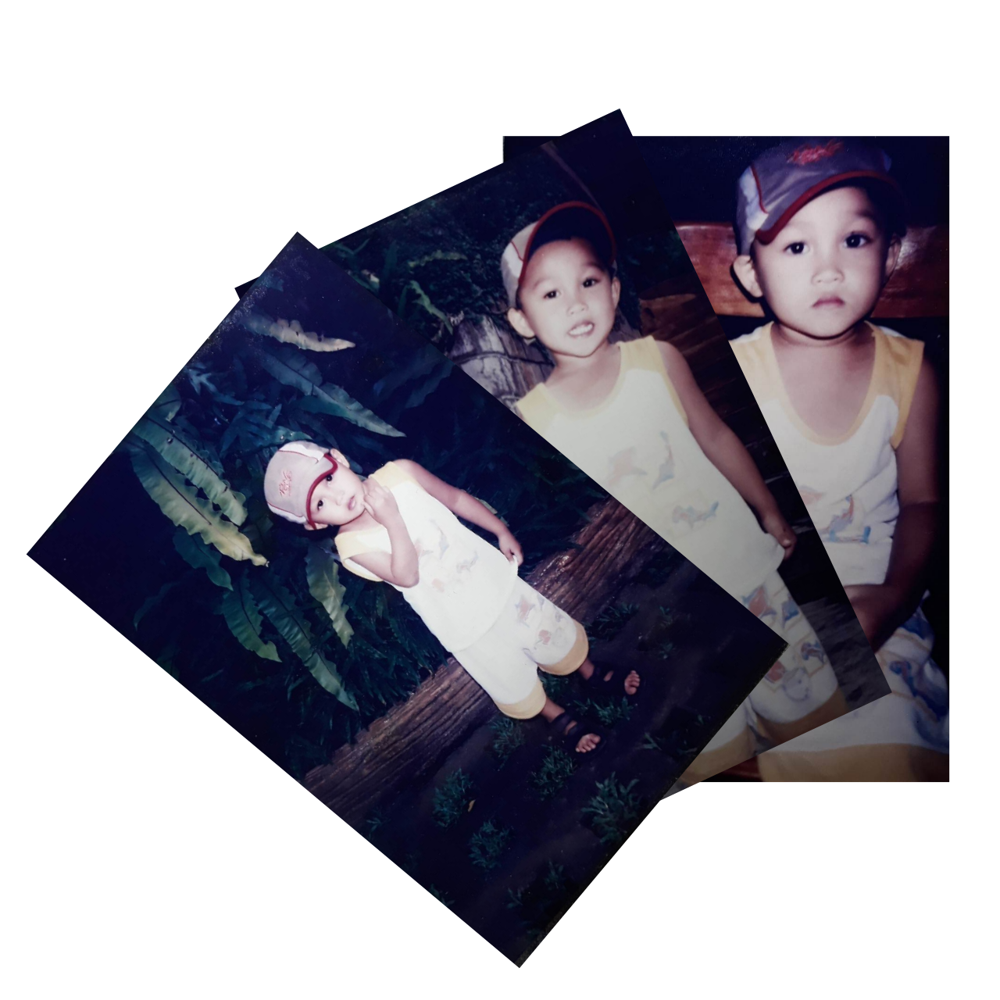
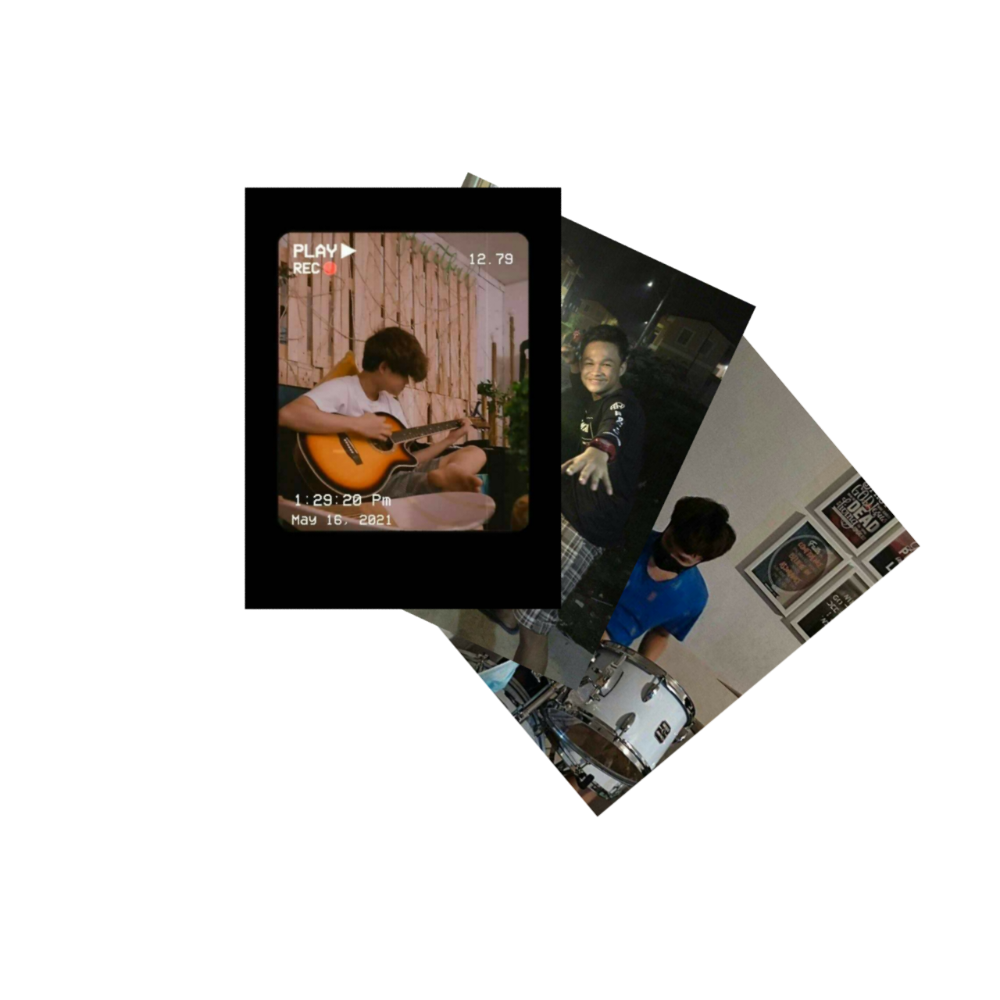
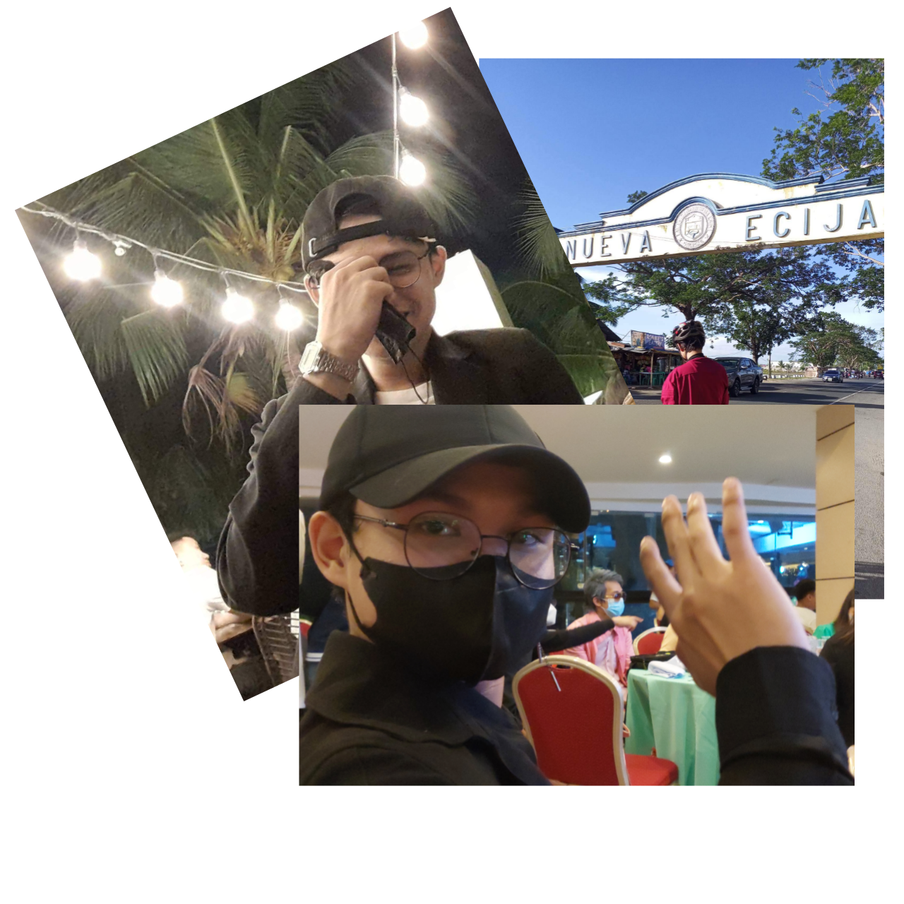

My Short Bio

Nothing is true, everything is permitted
- Hassan Sabah
CHILDHOOD
In my childhood, everything was great, good and full of happiness in life, so much friends that I’ve met so much new things that I received like so much fun in child food, I remember my childhood that we used to play with my friends on streets and such thing. I remember that, when my mother gave me a money I go to computer shop then play anything I want that I enjoy my life. I have so much time and freedom to play anything. The memories of childhood ultimately become the life long memory which always brings a smile on our faces. Only the grownups know the real value of childhood because the children do not understand these things. Moreover, Children’s have no worries, no stress, and they are free from the filth of worldly life. Also, when an individual collects memories of his/her childhood they give a delighted feeling. Besides, bad memories haunt the person his entire life. Apart from this, as we grow we feel more attachment to our childhood and we want to get back those days but we can’t. That’s why many people say ‘time is neither a friend nor a foe’. Because the time which is gone can’t come back and neither do our childhood. It is a time which many poets and writer praises in their creations. For children, it has no importance but if you ask an adult it is very important. Moreover, it a time when the moral and social character of the children develop. In this stage of life, we can easily remodel the mindset of someone. Also, it is very important to understand that the mindset of children can be easily altered in this time. So, we have to keep a close eye on our children. we can say that childhood is the time that makes our adulthood special. Also, children’s are like pottery vessels whom you can shape in any way you like. Besides, this their innocence and helpful nature gives everyone the message of humanity.
TEENAGE YEARS
Teenage years, So much fun great, met a lot of friends and try new things in life but has some limit, the priority is house things like cleaning and washing and some other stuffs but yeah it was great. Teenage life is a critical days for teenagers. It is the time wherein we experience identity crisis… we were troubled of so many things around us. The physical changes that occurs commonly to a teenager… also we experience some emotions or feelings that is difficult to explain. In this stage some of the teenagers feel in love in which some find it difficult to handle. They become obsessed and others become rebellious to their parents thinking that, they’re parents could not support nor will be against with what they want. Teenage life must not be confused. Teenagers should not make the flow of his life too fast… explore it but remember there’s limits or boundaries that should be consider. Being careful with everything is more important than regretting one single wrong action done. Teenagers should take the advices of their parents or elders for these advices will help them understand their self better. It will help them become a better person. My life as a teenager is such wonderful. Though sometimes, I experienced doubts and some teenagers will say that my life is a boring one, I’m very much sure that I’m in the right track for my parents guide me always. I’ m proud of being myself… thinking and analyzing everything to make my life as teenager good as ever, no regrets but good memories to reminisce when time comes. Teenage life is the most exciting, memorable experience that one should treasure! Just enjoy life.
COLLEGE YEARS
College life, I realize that life isn'just fun I need to survive that's why I have work, for my tuition and for my mother's sake too. I understand life that isn't easy that's all, Dealing with time is hard but yeah continue life. Good friends, competitive teachers and one wonderful family are the ones who mold me for who I am today. Everything good I have inside of me, I get from them. I experienced lots of challenges that test my skills and personality. All those challenges and problems that I’ve been through leaves a wonderful lesson. Good days gave me happiness, bad days gave me experiences, which are both essential to life. Success keeps me growing and failures make me humble. I have always been interested in picture books as a form, which stems (I suppose) from my background in theater. I am fascinated by the intersection of words and images – the way meanings of words can be altered by changing their presentation. An actor varies her intonation, or an illustrator changes a line – and the story is new. In college, I studied illustrated books from an academic standpoint. I went to Vassar, where children's book writer Nancy Willard was on faculty. She introduced me to illustrator Barry Moser, and the interview he gave me was the centerpiece of my senior thesis. While I was there, I spent three years as a student assistant in Vassar's lab pre-school, and after graduation found work as an assistant teacher in a Montessori school, teaching 6-9 year olds. That year, I began to write a novel with my father – through the mail. I was in Chicago and he was in New York. We thought it would be a fun way to keep in touch. I wrote a chapter – then he wrote a chapter. We rewrote each other's chapters. And rewrote them again. It took a long time, but eventually that story was published as The Secret Life of Billie's Uncle Myron.